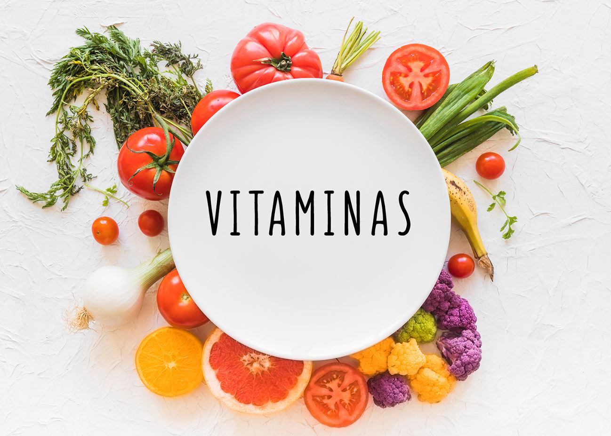
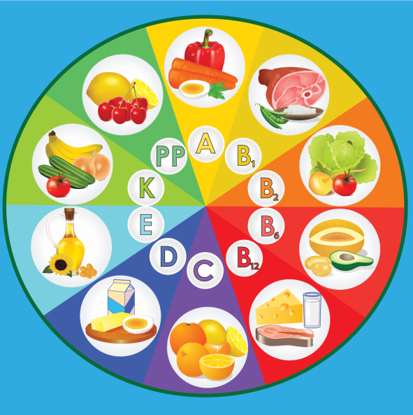
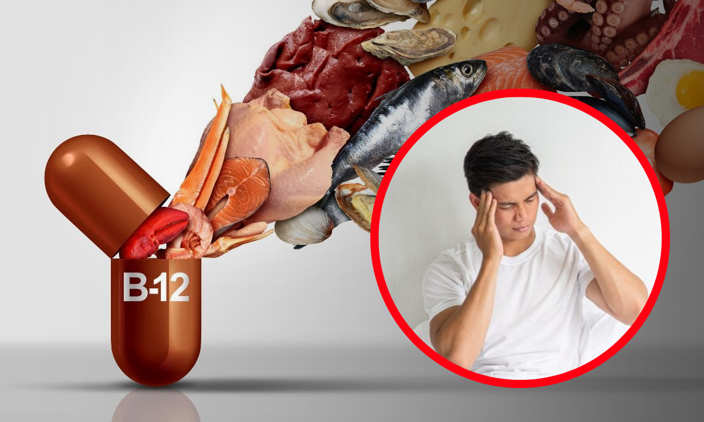

¿Qué son las vitaminas?
Las vitaminas son compuestos orgánicos que el cuerpo humano necesita en pequeñas cantidades para mantener su salud, crecimiento y funcionamiento óptimo. Aunque no aportan energía, son vitales para procesos metabólicos, producción de enzimas, y como antioxidantes.

Clasificación de las vitaminas
Se dividen en dos grandes grupos según su solubilidad:
Vitaminas liposolubles
Se disuelven en grasas y aceites, pueden almacenarse en tejidos grasos y el hígado. Ejemplos: A, D, E, K.
Vitaminas hidrosolubles
Se disuelven en agua y generalmente no se almacenan, por lo que deben consumirse regularmente. Ejemplos: Complejo B (B1, B2, B3, B6, B12, ácido fólico) y vitamina C.
Funciones y beneficios principales
Cada vitamina tiene funciones específicas que contribuyen al bienestar general:
- Vitamina A: Visión, crecimiento celular, inmunidad.
- Vitamina D: Absorción de calcio y fósforo.
- Vitamina E: Antioxidante protector celular.
- Vitamina K: Coagulación y salud ósea.
- Complejo B: Energía, glóbulos rojos, sistema nervioso.
- Vitamina C: Reparación tisular, absorción de hierro, defensas.

Fuentes naturales de vitaminas
Las vitaminas se obtienen principalmente a través de una dieta variada que incluya frutas, verduras, granos, productos animales y semillas.
Tabla de vitaminas con fuentes y funciones destacadas.
| Vitamina |
Fuente principal |
Función destacada |
| A | Zanahoria, espinaca, hígado | Visión y crecimiento |
| D | Pescado graso, yema de huevo, sol | Absorción de calcio |
| E | Frutos secos, aceites | Antioxidante |
| K | Verduras de hoja verde | Coagulación |
| C | Cítricos, fresas, pimientos | Tejidos e inmunidad |
| B | Carnes, granos, legumbres | Metabolismo energético |
Deficiencias y enfermedades relacionadas
Vitamina A
Ceguera nocturna, problemas en la piel.
Vitamina D
Raquitismo en niños, osteoporosis en adultos.
Vitamina C
Escorbuto, debilidad en encías y cicatrización deficiente.
Vitamina B12
Anemia perniciosa y problemas neurológicos.

Suplementación y cuidados
En casos especiales (embarazo, dietas restrictivas, enfermedades), puede ser necesaria la suplementación recetada por profesionales.
⚠️ El exceso, sobre todo de vitaminas liposolubles, puede ser tóxico.